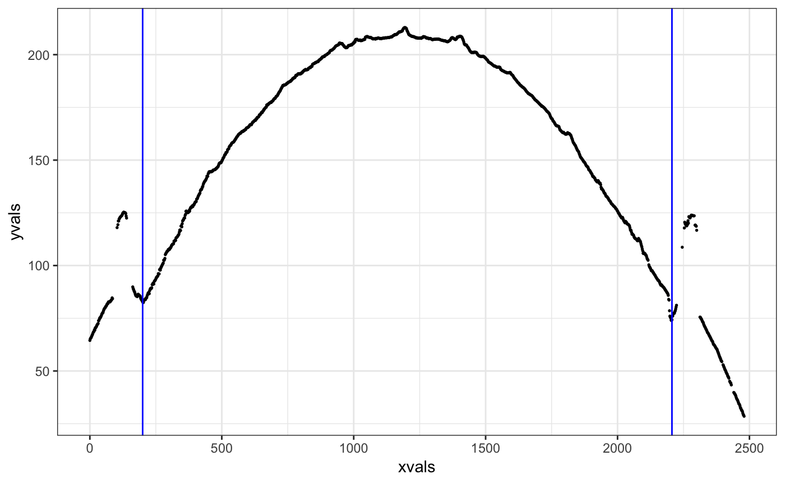
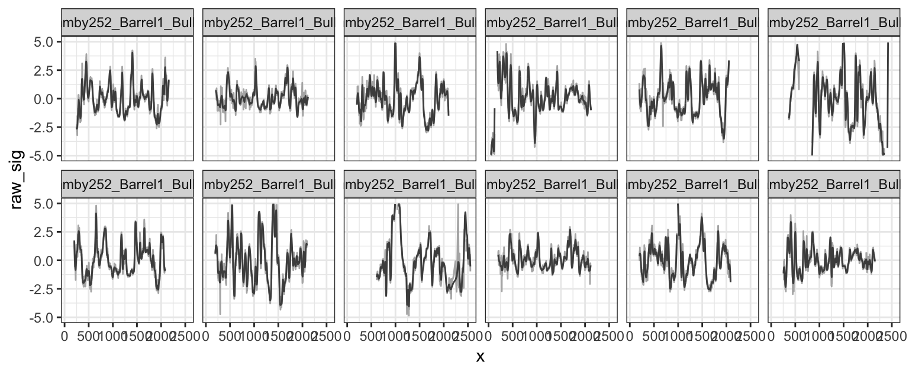

Analyze bullet striations using nonparametric methods
- Load libraries
- Download some files from NRBTDB, if not yet available:
if (!file.exists("data/Bullet1/Hamby252_Barrel1_Bullet1_Land1.x3p")) {
NRBTDsample_download("data")
}
b1 <- read_bullet("data/Bullet1", "x3p")## 6 files found. Reading ...## 6 files found. Reading ...Combine the results into a single data frame:
b1$bullet <- 1
b2$bullet <- 2
bullets <- rbind(b1, b2)
# turn the scans such that (0,0) is bottom left
bullets <- bullets %>% mutate(
x3p = x3p %>% purrr::map(.f = function(x) x %>%
rotate_x3p(angle=-90) %>%
y_flip_x3p())
) %>% mutate(
x3p = x3p %>% purrr::map(.f = function(x) {
# make sure all measurements are in microns
x$surface.matrix <- x$surface.matrix*10^6
x$header.info$incrementY <- x$header.info$incrementY*10^6
x$header.info$incrementX <- x$header.info$incrementX*10^6
x
})
)- Get the ideal cross sections
bullets <- bullets %>% mutate(
crosscut = x3p %>% purrr::map_dbl(.f = x3p_crosscut_optimize)
)
# now extract the crosscuts
bullets <- bullets %>% mutate(
ccdata = purrr::map2(.x = x3p, .y = crosscut,
.f = x3p_crosscut)
)- Get the groove locations
bullets <- bullets %>% mutate(
grooves = ccdata %>%
purrr::map(.f = cc_locate_grooves, method = "rollapply",
adjust = 30)
# purrr::map(.f = cc_locate_grooves, method = "quadratic")
# purrr::map(.f = cc_locate_grooves, method = "middle", middle=80)
)
bullets$grooves[[1]]## $groove
## [1] 246.875 2159.375
##
## $plot
- Extract signatures
bullets <- bullets %>% mutate(
sigs = purrr::map2(
.x = ccdata, .y = grooves,
.f = function(x, y) {
cc_get_signature(
ccdata=x, grooves = y, span1 = 0.75, span2=0.03)
})
)signatures <- bullets %>% select(source, sigs) %>% tidyr::unnest()
signatures %>%
filter(!is.na(sig),!is.na(raw_sig)) %>%
ggplot(aes(x = x)) +
geom_line(aes(y = raw_sig), colour = "grey70") +
geom_line(aes(y = sig), colour="grey30") +
facet_wrap(~source, ncol=6) +
ylim(c(-5,5)) +
theme_bw()
- Detect peaks and valleys in the aligned signatures
lands <- unique(bullets$source)
comparisons <- data.frame(
expand.grid(b1=lands, b2=lands), stringsAsFactors = FALSE)
# comparisons <- comparisons %>% filter(b1 != b2)
comparisons <- comparisons %>% mutate(
aligned = purrr::map2(.x = b1, .y = b2, .f = function(xx, yy) {
land1 <- bullets$sigs[bullets$source==xx][[1]]
land2 <- bullets$sigs[bullets$source==yy][[1]]
# land1$bullet <- "first-land"
# land2$bullet <- "second-land"
sig_align(land1$sig, land2$sig)
})
)
comparisons <- comparisons %>% mutate(
results = aligned %>% purrr::map(.f = sig_cms_max, span = 75)
)comparisons <- comparisons %>% mutate(
ccf = results %>% purrr::map_dbl(.f = function(x) x$ccf),
lag = results %>% purrr::map_dbl(.f = function(x) x$lag) #,
# cms = results %>% purrr::map_dbl(.f = function(x) x$maxCMS)
)
comparisons <- comparisons %>% mutate(
barrel1 = gsub(".*Barrel([1-6])_.*","\\1",b1),
barrel2 = gsub(".*Barrel([1-6])_.*","\\1",b2),
bullet1 = gsub(".*Bullet([1-6])_.*","\\1",b1),
bullet2 = gsub(".*Bullet([1-6])_.*","\\1",b2),
land1 = gsub(".*Land([1-6]).x3p","\\1",b1),
land2 = gsub(".*Land([1-6]).x3p","\\1",b2)
)
# quick visualization:
comparisons %>%
ggplot(aes(x = land1, y = land2, fill=ccf)) +
geom_tile() +
scale_fill_gradient2(low="grey80", high = "darkorange",
midpoint = 0.5) +
facet_grid(bullet1~bullet2, labeller="label_both") +
xlab("Land 1") +
ylab("Land 2")
- Extract Features
comparisons <- comparisons %>% mutate(
features = results %>% purrr::map(.f = extract_features_all)
)- Get Predicted Probability of Match
comparisons <- comparisons %>% tidyr::unnest(features)
comparisons$rfscore <- predict(bulletr::rtrees, newdata = comparisons, type = "prob")[,2]
comparisons %>%
ggplot(aes(x = land1, y = land2, fill=rfscore)) +
geom_tile() +
scale_fill_gradient2(low="grey80", high = "darkorange",
midpoint = .5) +
facet_grid(bullet1~bullet2, labeller="label_both") +
xlab("Land 1") +
ylab("Land 2")
An interactive interface for doing comparisons is available https://oaiti.org/apps/bulletmatcher/